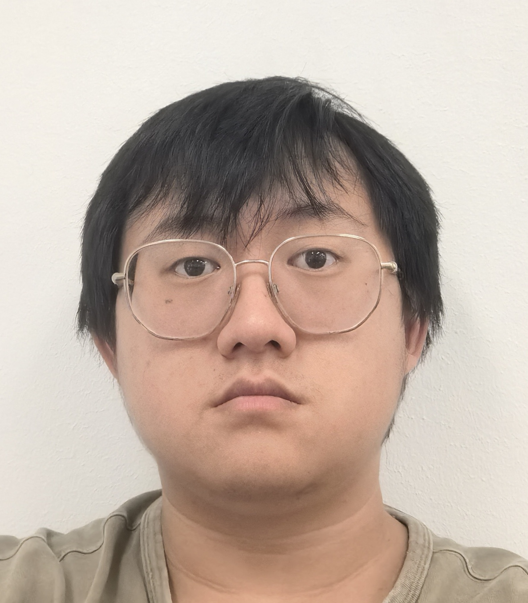

Chris Xu

You can find me at HSS 3073 (University of California San Diego).
My email is chx007(at)(four letter school name)(dot)edu.
My permanent email is (firstname)(lastname)(the number three)(at)(googlemail)(dot)com.
About me
As of summer 2026, I have graduated from UCSD.
I work in algebraic number theory, and was advised under Kiran Kedlaya and Aaron Pollack.
This fall, I will be at Tsinghua University working as a postdoc under Koji Shimizu.
Here is my CV.
Papers
- Algorithmic modular curve Chabauty-Coleman without equations, PhD dissertation (to be replaced with a more descriptive and correct preprint as soon as possible), code, ChaBONNty slides
- Rigorous expansions of modular forms at CM points, I: Denominators, submitted to LuCaNT
- Skelet #17 and the fifth Busy Beaver number, preprint
I have other "research papers" from my undergrad but they're not good. If you are interested you can find all of them on MIT's math website.
What I may be thinking about...
Rational points on modular curves. Mazur's Program B. Quadratic Chabauty algorithms for modular curves without equations. Semistable models for modular curves above 2. Rational points on Zywina twist families of modular curves. Geometry of normalizer of non-split Cartan modular curves of prime level. Motivic Chabauty for high Mordell-Weil rank curves. Makdisi symbols for Hilbert modular varieties. Symmetric power quadratic Chabauty. Mazur's Program B for Shimura curves.
Some speculations...
Mazur's Program B for Shimura varieties. Chabauty generalizations for surfaces of general type with trivial Albanese. Upgrading Chabauty from p-adic cohomology to Habiro cohomology. Understanding Chabauty-Kim as a "unipotent modularity" counterpart to, say, the usual modularity approaches to Fermat-style equations.
What I may be learning about...
Some of us number theorists at UCSD have made a Discord server for the purposes of organizing seminars each quarter. In particular to every bullet point below there is a corresponding seminar ongoing right now. Please email Shubhankar Sahai if you are UCSD affiliated and interested in joining the Discord.
- (Spring 2026) Alterations. See here.
- (Winter 2025) Analytic stacks. Attempting to understand Camargo Rodriguez's paper on the analytic de Rham stack. Also, hopefully the real local Langlands manuscript.
- (Winter 2025) Modular curves. Katz-Mazur. Trying to learn this thoroughly for obvious purposes (see above).
- (Winter 2025) Representations of p-adic groups. For the purposes of Arizona Winter School 2025.
Teaching
- Spring 2026: Math 20E
- Winter 2026: Math 20D
- Fall 2025: Math 120A
- Spring 2026: Math 20E
- Winter 2025: Math 20E
- Fall 2024: Math 104/105
- Summer 2024: Math 20E
- Spring 2024: Math 20E
- Winter 2024: Math 20D
- Fall 2023: Math 20E
- Spring 2023: Math 20E
- Winter 2023: Math 20C
- Fall 2022: Math 20B
- Spring 2022: Math 106
- Winter 2022: Math 20C
- Fall 2021: Math 20B
Federico Ardila's axioms
- Mathematical potential is distributed equally among different groups, irrespective of geographic, demographic, and economic boundaries.
- Everyone can have joyful, meaningful, and empowering mathematical experiences.
- Mathematics is a powerful, malleable tool that can be shaped and used differently by various communities to serve their needs.
- Every student deserves to be treated with dignity and respect.
Last updated: July 1st, 2026